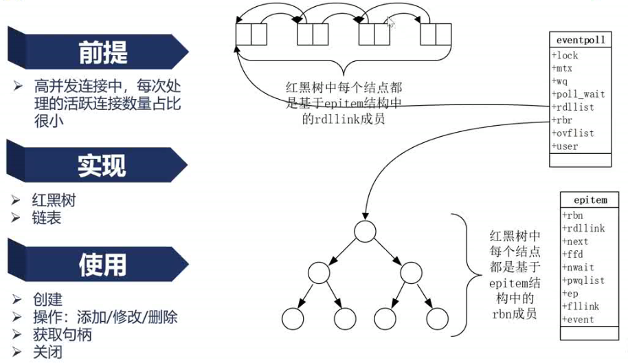

2_Nginx架构基础
请求处理流程
进程结构
- 单进程 开发
- 多进程 生产，保持健壮，充分利用多核处理器
- Master 进程 监控管理worker进程（启动，检查，配置文件载入，热部署等）
- worker 进程 处理请求
- Cache manager 管理缓存
- Cache loader 加载缓存（后端服务响应缓存到内存）
为什么使用多进程，而非多线程？
保证可高用性，可靠性，线程件共享内存空间，若第三方模块引发地址越界时会导致nginx进程挂掉。
不仅将worker线程数设置为cpu核数，还应将worker进程绑定到固定的核上，减少缓存失效。
Nginx进程结构实例演示
kill -SIGHUP masterPI 与 -s reload结果相同 ：重新启动新的worker进程、Cache Manager进程
kill -SIGTERM workerPI ，worker进程收到停止信号会退出，并会向master进程发送CHLD信号，master将再拉起一个worker进程
结论：命令行中的一些子命令 是在向master进程发送信号
Nginx进程管理：信号

- master进程
- CHLD linux规定子进程终止时向父进程发送CHLD信号
- TERM,INT 立刻停止nginx进程
- QUIT 优雅停止，不立刻结束连接
- USR1 重新打开日志文件（切割文件）
- USR2、WINCH 不能使用Nginx命令行+特定命令向master发送命令，只能使用linux 命令行kill直接向master进程发送信号（需要先找到PI）
- worker进程
一般不直接向worker进程发送信号，而是通过向master进程发送信号管理worker进程 - nginx命令行
nginx命令行工具会读取 nginxpid 文件中的NginxPID 将nginx命令转换为linux命令发送信号
reload配置文件的真相（reload流程）
- 向master发送HUP信号（reload命令）
- master进程检查配置语法
- master进程打开新的监听端口
- master进程启动新worker
- master向老worker发送QUIT信号
- 老worker关闭监听句柄，处理完当前请求后结束进程

热部署流程

- 更新配置文件
- 向master发送USR2信号
- master修改pid文件名，加后缀.oldbin
- master用新配置文件启动新master（新master是老master的子进程，新master会启动worker；此时新老master共存）
- 向老master进程发送QUIT信号，关闭老master
- 回滚：向老master发送HUP（reload），向新master发送QUIT
优雅关闭worker
对于http请求可以识别出当前连接没有在处理请求，此时可以优雅关闭
对于TCP/UDP/WebSocket 无法识别
- 设定定时器 worker_shutdown_timeout
- 关闭监听句柄（不再处理新请求）
- 关闭空闲连接
- 在循环中等待全部连接关闭（当超过定时器后会强制关闭，不再优雅）
- 退出进程
网络收发与Nginx事件的对应关系
Nginx事件驱动（网络事件）框架
每对链接对应读事件、写事件
Nginx网络事件实例演示
当nginx所在服务器收到客户端返回的ack后，操作系统通知nginx收到读事件，此读事件是一个建立新链接Nginx事件驱动模型
Nginx服务器上第三方模块占用大量cpu时导致大量事件超时
解决：如GZIP分段使用CPU
epoll的优劣及原理
Number of file description 句柄数（并发链接数）
获取事件队列的间隔很短，收到有效的报文有限，活跃链接有限
select或poll实现有问题：将所有链接丢给操作系统判断哪些链接有事件输入
epoll维护一个链表rdllink，取活跃链接时遍历此链表即可
操作系统接收到事件插入或nginx处理完成删除时间复杂度Log(n)

Nginx的请求切换
当前cpu频率进程间切换消耗大概5微妙 当并发请求低时几百左右，可以接受进程切换 当并发数到达万级已不可接受同步、异步、阻塞、非阻塞
阻塞、非阻塞：操作系统提供的方法被调用，不满足条件时导致进程切换，当前进程阻塞。非阻塞不会在时间片未结束时切换被切换。
同步、异步：代码调用方式的区别
阻塞调用
Nginx并发连接太多不适合阻塞调用非租塞调用
非阻塞调用下的同步与异步
同步调用代码使用非阻塞方式local ok，err = client:connect(ip,port) 同步调用代码阻塞openresty调用代码，但不会阻塞nginx代码。
Nginx的模块究竟是什么
通用模块 ngx_module 子模块 ngx_core_module_t ngx_http_module_t ngx_event_module_t ...模块分类
- NGX_CORE_MODULE
- events类模块 （源码文件/nginx/event）
- event_core :每类模块的通用模块（index:1）
- epoll
- http类模块 （源码文件/nginx/http）
- ngx_http_core_module
- 请求处理模块
- 相应过滤模块 （请求二次处理）
- upstream相关模块 （负载均衡）
- mail类模块 （源码文件/nginx/mail）
- stream类模块 （源码文件/nginx/stream）
- events类模块 （源码文件/nginx/event）
- NGX_CONF_MODULE
Nginx如何通过连接池处理网络请求
connections 用于客户端与上游服务器的连接，所以若做一层反向代理，每一个客户端消耗两个connection。 每个connection对应两个事件，一个读和一个写事件 使用一个链接内存大小：232+96*2 字节，connections配置会预分配相应内存高并发nginx配置需要配置足够大的connection
内存池对性能的影响
connection_pool_size 连接内存池
预分配内存，减少运行时分配次数，提高性能
小块内存优化，减少碎片，提高利用率
request_pool_size 请求内存池
需要保存url信息，相对较长
对于长链接，一个connection对应n个request
注意：两个内存池不可混用 (释放延迟，内存使用增加)
所有worker进程协同工作的关键：共享内存
通讯方式
- 信号（进程管理）
- 共享内存（数据同步，nginx跨进程通信最有效手段）
- 锁
- slab内存管理器
- 可用的两种数据结构：rbtree、链表
使用共享内存的模块
OpenResty共享内存
同时使用rbtree（保存kv）和链表（超过内存上限lru淘汰）lua_shared_dict 分配共享内存指令
用好共享内存的工具：slab管理器
分页-切分不同大小的slot（32Byte、64Byte...）- bestfit分配方式
- 适合小对象 ,有内存浪费（最多两倍的内存消耗）
- 避免碎片
- 避免重复初始化(特定页存储特定数据结构的数据)
哈希表的max_size与bucket_zize如何配置
Nginx常用容器：红黑树
使用动态模块来提升运维效率
 动态库目录：/nginx/modules
动态库目录：/nginx/modules
配置文件需配置动态模块位置：load_modules modules/module_name.so (load_modules与event、http同级)
linux 动态库：*.so